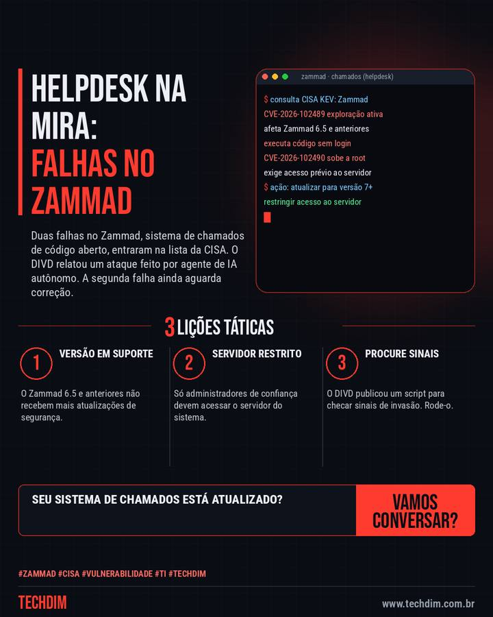

Alerta de segurança
Zammad: falhas no sistema de chamados entram na lista de exploradas da CISA
Duas falhas no Zammad, sistema de chamados de código aberto, entraram na lista da CISA. O DIVD relatou um ataque feito por agente de IA autônomo. A segunda falha ainda aguarda correção.

O que aconteceu
- A CISA incluiu duas falhas do Zammad, o CVE-2026-102489 e o CVE-2026-102490, na lista de vulnerabilidades exploradas
- A primeira permite executar código sem login no Zammad 6.5 e anteriores; a partir da versão 7 não é explorável nas condições atuais
- A segunda eleva o acesso a root, exige acesso prévio ao servidor e, segundo o aviso, a correção ainda estava em desenvolvimento
Se usa Zammad, atualize para a versão 7 ou superior e limite quem acessa o servidor.
Por que importa
Sistemas de chamados guardam dados de clientes e são comuns em empresas que montam o próprio suporte; há exploração ativa e uma falha ainda sem correção.
Como se proteger
- Versão em suporte. O Zammad 6.5 e anteriores não recebem mais atualizações de segurança.
- Servidor restrito. Só administradores de confiança devem acessar o servidor do sistema.
- Procure sinais. O DIVD publicou um script para checar sinais de invasão. Rode-o.
Fontes consultadas
Mais do Radar de hoje
Este texto resume as fontes citadas na data de publicação. Confira sempre o aviso oficial do fabricante antes de agir em produção.